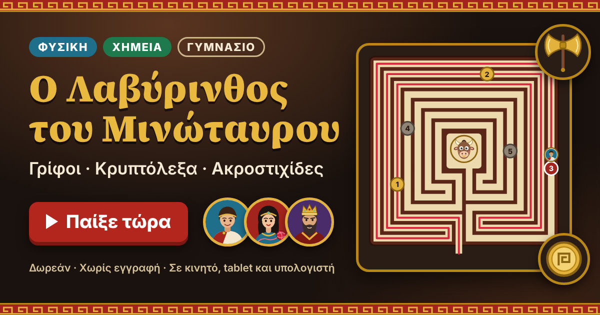
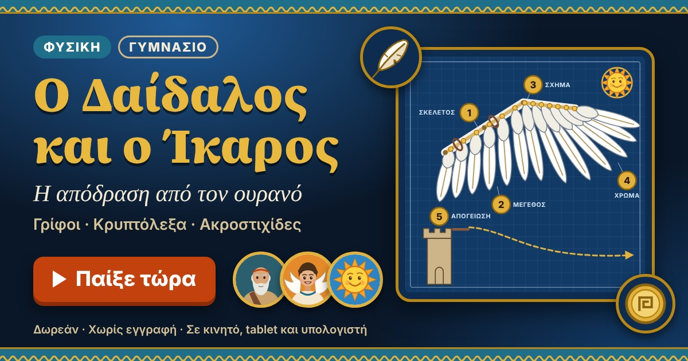

Φωτογραφίες από τον Όμιλο 📷
Στιγμιότυπα από τις δραστηριότητές μας — πειράματα, κατασκευές, επισκέψεις!
Γυμνάσιο Γουριάς "Κ. Σ. Κώνστας"
Σχολικό Έτος 2026 - 2027Θεωρία, πειράματα με sliders και αυτοαξιολόγηση 15 ερωτήσεων. Επίλεξε τάξη και κλάδο.
Διαδραστικά εργαστήρια με προσομοιώσεις PhET. Ολοκλήρωσε τα εργαστήρια με τη σειρά για καλύτερα αποτελέσματα.
Β' Γυμνάσιο: Εργαστήρια 1–3 (Θερμοδυναμική) | Γ' Γυμνάσιο: Εργαστήρια 1–5 (Ηλεκτρισμός)
Κατασκευή απλών & σύνθετων κυκλωμάτων. Μέτρηση τάσης (V) και έντασης (A) με εικονικό βολτόμετρο & αμπερόμετρο.
▶ PhET ΚυκλώματαΜέτρηση I για διάφορες τιμές V. Κατασκευή χαρακτηριστικής καμπύλης I-V. Υπολογισμός αντίστασης R=V/I.
▶ PhET ΚυκλώματαΣειρά vs παράλληλη σύνδεση. Σύγκριση ολικής αντίστασης με πειραματικές μετρήσεις & θεωρητικούς υπολογισμούς.
▶ PhET ΚυκλώματαΜέτρηση θερμοκρασίας με phyphox. Γραφική παράσταση διαστολής στερεών & υγρών. Σύνδεση με καθημερινά φαινόμενα.
▶ phyphox.orgΠροσομοίωση μορίων αερίου. Σχέση θερμοκρασίας–πίεσης. Νόμος Gay-Lussac με γραφική παράσταση P-T.
▶ PhET ΑέριαΟ Τιτάνας Προμηθέας αλυσοδέθηκε στον Καύκασο! Λύσε 5 αίθουσες γρίφων για αγωγή, συναγωγή, ακτινοβολία, καύση και θερμική ισορροπία — με οδηγούς τον Ήφαιστο, τον Αίολο, τον Απόλλωνα, τον Δευκαλίωνα και τη Θέμιδα.
Φυσική Α' Γυμνασίου · Θερμότητα · 5 επίπεδα · ~35 λεπτά. Παίζεται σε κινητό, tablet, υπολογιστή και διαδραστικό πίνακα. Εγκαθίσταται σαν εφαρμογή. Έχει κουμπί μεγαλύτερης γραμματοσειράς.
🔥 Παίξε: Ο Προμηθέας – Η Κλοπή της Φωτιάς!
Γίνε ο Θησέας! Πέρασε 5 αίθουσες Φυσικής και Χημείας λύνοντας τους γρίφους του Μίνωα, κρυπτόλεξα και ακροστιχίδες, με οδηγό τον μίτο της Αριάδνης. Μάζεψε χρυσά νομίσματα και διπλούς πελέκεις και νίκησε τον Μινώταυρο σε μονομαχία γνώσεων.
Παίζεται σε κινητό, tablet, υπολογιστή και διαδραστικό πίνακα. Η πρόοδος αποθηκεύεται και το παιχνίδι μπορεί να μπει στην οθόνη του κινητού σαν εφαρμογή.
🎮 Παίξε: Ο Λαβύρινθος του Μινώταυρου!
Βοήθησε τον Ίκαρο να φτιάξει ασφαλή φτερά και να βρει τη σωστή διαδρομή για την απόδραση! Πέντε στάδια Φυσικής — δυνάμεις, βαρύτητα, πτήση, θερμότητα, ενέργεια — με γρίφους του Δαίδαλου, κρυπτόλεξα, ακροστιχίδες και αποφάσεις κατασκευής. Μάζεψε χρυσά νομίσματα και φτερά και πέτα από την Κνωσό ως την Ικαρία.
Παίζεται σε κινητό, tablet, υπολογιστή και διαδραστικό πίνακα. Η πρόοδος αποθηκεύεται και το παιχνίδι μπορεί να μπει στην οθόνη του κινητού σαν εφαρμογή.
🎮 Παίξε: Ο Δαίδαλος και ο Ίκαρος!Δοκίμασε τις γνώσεις σου στη Φυσική Β' & Γ' Γυμνασίου με 6 ερωτήσεις στυλ «Ποιος θέλει να γίνει εκατομμυριούχος». Κέρδισε Χρυσά Coins!
🎮 Παίξε: Ποιος θέλει να γίνει... Φυσικός!Λέξεις-κλειδιά από την ύλη κάθε τάξης, με ορισμούς. Ξεχωριστό σταυρόλεξο για τη Β' και τη Γ' Γυμνασίου.
Κάθε ομάδα (3–4 μαθητές) επιλέγει ένα θέμα, το ερευνά, κάνει εικονικό εργαστήριο ή κατασκευή και παρουσιάζει στο τέλος της χρονιάς.
Μελέτη αεροδυναμικών δυνάμεων: άντωση, αντίσταση, ώθηση. Προσομοίωση στο PhET "Forces & Motion" και κατασκευή χάρτινου μοντέλου φτερού (αεροτομή).
Εφαρμογή 2ου Νόμου Newton σε αγωνιστικό αυτοκίνητο. Μελέτη τριβής, φρεναρίσματος και αεροδυναμικής πτέρυγας. Προσομοίωση τροχιάς με phyphox.
Σχεδιασμός ηλεκτρικού κυκλώματος για «έξυπνο δωμάτιο». Χρήση PhET Circuit Construction, υπολογισμός κατανάλωσης ενέργειας και κόστους.
Εξερεύνηση ηχητικών κυμάτων, συχνοτήτων και ηχητικής ρύπανσης. Χρήση phyphox για ανάλυση φάσματος ήχου και PhET Wave on a String.
Δημιούργησε κυκλώματα με αντιστάσεις, λαμπτήρες και πηγές. Μέτρησε τάση και ένταση.
▶ ΆνοιξεΕξερεύνησε συχνότητα, πλάτος, μήκος κύματος. Συνδυάζεται με το μάθημα ακουστικής.
▶ ΆνοιξεΕφαρμογή Νόμων Newton. Δοκίμασε επιτάχυνση, τριβή και ισορροπία δυνάμεων.
▶ ΆνοιξεΕλαστικές και ανελαστικές κρούσεις. Εξερεύνηση διατήρησης ορμής και κ.ε.
▶ ΆνοιξεΠλανητικές τροχιές, βαρύτητα, δύναμη Newton. Ιδανικό για σύνδεση με αεροδιαστημική.
▶ ΆνοιξεΜόρια σε κίνηση, θερμοκρασία, πίεση. Σύνδεση με κινητήρες εσωτερικής καύσης.
▶ ΆνοιξεΜέτρηση g με τον επιταχυνσιόμετρο του κινητού. Πείραμα ελεύθερης πτώσης.
▶ phyphox.orgΒάλε το κινητό στο αυτοκίνητο και μέτρα την επιτάχυνση εκκίνησης. Σύγκριση με F1.
▶ phyphox.orgΚατασκευή κεραίας διπλού τετάρτου κύματος από χαλκόσυρμα. Σύνδεση με ραδιόφωνο και συντονισμός στα 88–108 MHz.
Υλικά: χαλκόσυρμα 1.5mm, ταινία, σύνδεσμος IEC/F, ραδιόφωνο
Χρησιμοποίησε 4 λεμόνια για να ανάψεις ένα LED! Ψευδάργυρος (γαλβανισμένο καρφί) ως άνοδος και χαλκός ως κάθοδος σε κάθε κύτταρο.
Υλικά: 4 λεμόνια, 4 γαλβανισμένα καρφιά (Zn), σύρμα χαλκού (Cu), 1 LED, καλώδια
Κατασκευή απλού ηλιακού συλλέκτη με μαύρο σωλήνα και κουτί στυρόφομ με αλουμινόχαρτο. Μέτρηση θερμοκρασίας εισόδου/εξόδου.
Υλικά: μαύρος σωλήνας κήπου (5–10m), κουτί styrofoam, αλουμινόχαρτο, μεμβράνη, 2 θερμόμετρα, χοάνη
8 ποτήρια με διαφορετικές στάθμες νερού παράγουν διαφορετικές νότες. Σύνδεση με ακουστική, συχνότητα και μήκος κύματος.
Υλικά: 8 γυάλινα ποτήρια, νερό, κουτάλι, app μέτρησης συχνότητας (π.χ. phyphox)
Κατασκευή καταπέλτη με ξυλάκια. Μελέτη μετατροπής δυναμικής→κινητικής ενέργειας και εκτίμηση εμβέλειας με εξισώσεις βλήματος.
Υλικά: ξυλάκια popsicle, ελαστικάκια, πλαστική σφεντόνα, χαρτόνι, κόλλα, χαρτάκια σε ρόλο (βλήμα)
Μελέτη περιόδου εκκρεμούς για διαφορετικά μήκη. Επαλήθευση τύπου T=2π√(L/g) και μέτρηση g από πείραμα.
Υλικά: νήμα, βαρίδια (παξιμάδια), χάρακας, χρονόμετρο (ή phyphox), ταινία
Παρακολουθούμε τμήματα ταινιών και συζητάμε τη Φυσική και Χημεία πίσω από τις σκηνές!
Βαρύτητα, σχετικότητα χρόνου, ορίζοντας γεγονότων μαύρης τρύπας. Η καλύτερη εκλαΐκευση της Γενικής Σχετικότητας!
Επιβίωση στον Άρη με χημεία, βιολογία και φυσική. Πώς φυτεύεις πατάτες με περιττώματα; Αναλύουμε τη χημεία.
Τρεις μαύρες γυναίκες μαθηματικοί στη NASA! Υπολογισμός τροχιάς του John Glenn. Γιατί η Φυσική δεν έχει φύλο;
Ένας έφηβος από την Δυτική Βιρτζίνια χτίζει πυραύλους! Φυσική πυραύλων, Newton 3ος νόμος, ώθηση αντίδρασης.
Πυρηνική φυσική, αλυσιδωτή αντίδραση σχάσης, βόμβα ατόμου. Τι είναι η ενέργεια δέσμευσης; E=mc². (Για Γ' Γυμνάσιο)
Αεροδυναμική στα άκρα! F/A-18 και Su-57 — ανάλυση πτητικής μηχανικής, υπερηχητικές ταχύτητες, Mach number. Ο αγαπημένος του ομίλου!
Alan Turing και η πρώτη υπολογιστική μηχανή. Κρυπτογραφία, λογική, αλγόριθμοι — Φυσική ή Πληροφορική; Και τα δύο!
Αποστολή διάσωσης με περιορισμένα μέσα στο διάστημα. Φυσική διαστημικής πτήσης, οξυγόνο, CO₂ — μια υπέροχη κατάσταση έκτακτης ανάγκης!
Τον Σεπτέμβριο 2015, τα ανιχνευτήρια LIGO (Laser Interferometer Gravitational-Wave Observatory) στις ΗΠΑ ανίχνευσαν για πρώτη φορά βαρυτικά κύματα — ρυτιδώσεις στον χωροχρόνο που προβλέφθηκαν 100 χρόνια νωρίτερα από τον Αϊνστάιν μέσω της Γενικής Θεωρίας Σχετικότητας. Το σήμα GW150914 προήλθε από τη σύγκρουση δύο μελανών οπών σε απόσταση 1,3 δισεκατομμυρίων ετών φωτός.
Πώς «ακούει» το LIGO; Χρησιμοποιεί laser interferometry: μια δέσμη laser σπάζει στα δύο, ταξιδεύει σε σωλήνες 4 km, ανακλάται και επιστρέφει. Ένα βαρυτικό κύμα παραμορφώνει τον χωροχρόνο κατά μία απόσταση μικρότερη από 1/10.000 της διαμέτρου ενός πρωτονίου — και το LIGO το μετρά! Αυτή είναι η πιο ακριβής μέτρηση στην ιστορία της επιστήμης.
Από το 2015 έως το 2025 (O4 run), το δίκτυο LIGO-Virgo-KAGRA ανίχνευσε >100 συγχωνεύσεις μελανών οπών και αστέρων νετρονίων. Το 2017 (GW170817) φωτογραφήθηκε και η ηλεκτρομαγνητική λάμψη (kilonova) από σύγκρουση αστέρων νετρονίων — αποδεικνύοντας ότι τα βαρέα στοιχεία (χρυσός, ουράνιο) σχηματίζονται εκεί. Νόμπελ Φυσικής 2017.
Η πυρηνική σύντηξη — η ίδια διεργασία που τροφοδοτεί τον Ήλιο — είναι το «άγιο δισκοπότηρο» της ενέργειας: ανεξάντλητο καύσιμο (δευτέριο από θαλασσινό νερό), μηδενικές εκπομπές CO₂ και ελάχιστη ραδιενεργός απόβλητα. Στη σύντηξη, πυρήνες δευτερίου (²H) και τριτίου (³H) ενώνονται δημιουργώντας ήλιο και απελευθερώνοντας τεράστια ενέργεια (E=Δmc², νόμος Einstein).
Το ITER (International Thermonuclear Experimental Reactor) στη Γαλλία, το μεγαλύτερο επιστημονικό πείραμα στην ιστορία, ολοκλήρωσε τη συναρμολόγηση του κεντρικού σολενοειδούς το 2024. Χρησιμοποιεί Tokamak: δακτυλιοειδής θάλαμος που περιορίζει πλάσμα θερμοκρασίας 150 εκατομμυρίων °C (10× θερμότερο από τον Ήλιο!) με υπεραγώγιμα μαγνητικά πεδία.
Παράλληλα, τον Δεκέμβριο 2022, το NIF (National Ignition Facility, ΗΠΑ) πέτυχε για πρώτη φορά «ignition»: η ενέργεια που παρήχθη από τη σύντηξη (3,15 MJ) ξεπέρασε αυτή που κατανάλωσαν τα laser (2,05 MJ). Ιστορική στιγμή για την ανθρωπότητα — αν και ο δρόμος για εμπορικά εργοστάσια σύντηξης εκτιμάται ακόμα σε 20–30 χρόνια.
Σε μια υπόγεια κυκλική σήραγγα 27 χιλιομέτρων στα σύνορα Γαλλίας-Ελβετίας, ο Μεγάλος Επιταχυντής Αδρονίων (LHC) του CERN επιταχύνει δέσμες πρωτονίων σχεδόν στην ταχύτητα του φωτός. Μέσα από τις τρομερές συγκρούσεις τους, οι επιστήμονες αναδημιουργούν για κλάσματα δευτερολέπτου τις συνθήκες θερμοκρασίας και ενέργειας που επικρατούσαν ελάχιστα μετά τη γέννηση του σύμπαντος.
Η θεωρητική βάση για αυτά τα πειράματα θεμελιώθηκε από φυσικούς όπως ο Peter Higgs και ο François Englert, οι οποίοι το 1964 πρότειναν τον μηχανισμό Higgs. Η θεωρία αυτή προέβλεπε την ύπαρξη ενός πεδίου διάχυτου στο σύμπαν που δίνει στα θεμελιώδη σωματίδια τη μάζα τους, αποτελώντας το «ιερό δισκοπότηρο» της σύγχρονης φυσικής.
Η υλοποίηση αυτού του τιτάνιου εγχειρήματος κατέστη δυνατή χάρη στις προσπάθειες χιλιάδων μηχανικών και φυσικών, όπως ο Lyn Evans, ο οποίος ηγήθηκε της κατασκευής του LHC. Με τη χρήση υπεραγώγιμων μαγνητών που ψύχονται με υγρό ήλιο και ανιχνευτών τεράστιας ακρίβειας, η ομάδα του CERN κατάφερε το 2012 να επιβεβαιώσει πειραματικά την ύπαρξη του σωματιδίου Higgs.
Αν δύο μουσικά όργανα παίξουν την ίδια ακριβώς νότα (π.χ. Λα στα 440 Hz), ο ήχος τους παραμένει μοναδικός και άμεσα αναγνωριστικός. Αυτό συμβαίνει επειδή η Φυσική της ακουστικής δείχνει ότι, πέρα από τη βασική συχνότητα, κάθε όργανο παράγει ένα στρώμα αρμονικών συχνοτήτων (overtones) των οποίων η σύνθεση και η απόσβεση προσδιορίζουν τη λεγόμενη χροιά (timbre).
Στη χρυσή εποχή της οργανοποιίας, ο Antonio Stradivari τον 17ο και 18ο αιώνα εφάρμοσε διαισθητικές και πρωτοποριακές αρχές ακουστικής μηχανικής. Με την ακριβή επιλογή ξύλων, τη γεωμετρική σχεδίαση του σώματος και την τέλεια εφαρμογή των F-οπών στο βιολί, κατάφερε να ενισχύσει συγκεκριμένες αρμονικές, δημιουργώντας έναν ήχο απαράμιλλης διαύγειας και έντασης που παραμένει ασυναγώνιστος.
Αντίστοιχα, στην εξέλιξη της κιθάρας, ο Christian Friedrich Martin τον 19ο αιώνα επινόησε την εσωτερική δομή στήριξης γνωστή ως «X-bracing». Αυτή η καινοτομία επέτρεψε στο καπάκι της ακουστικής κιθάρας να αντέχει την τεράστια τάση των χορδών διατηρώντας παράλληλα την ελαστικότητα που απαιτείται για να πάλλονται πλούσια οι αρμονικές του ήχου.
Το 2024-2025 η SpaceX πέτυχε κάτι άνευ προηγουμένου: ο Starship, ο ψηλότερος και ισχυρότερος πύραυλος στην ιστορία (120m ύψος, 33 κινητήρες Raptor), πραγματοποίησε επιτυχημένες δοκιμαστικές πτήσεις και ο ενισχυτής επέστρεψε στη βάση με ακρίβεια χιλιοστού, πιαστός κυριολεκτικά στον αέρα από μηχανικά «χέρια».
Πίσω από αυτό το επίτευγμα κρύβεται η αρχή δράσης-αντίδρασης του Newton: τα αέρια καύσης εκτοξεύονται με τεράστια ταχύτητα προς τα κάτω, σπρώχνοντας τον πύραυλο προς τα πάνω. Οι 33 κινητήρες Raptor χρησιμοποιούν μεθάνιο (CH₄) ως καύσιμο — μία επιλογή που επιτρέπει ανακύκλωση στον Άρη από ατμόσφαιρα CO₂ και υδρόγονο.
Η αεροδυναμική αποκατάσταση («belly flop» και επαναφορά) βασίζεται στη ρύθμιση της γωνίας των πτερυγίων ελέγχου και στην ανάφλεξη κινητήρων την τελευταία στιγμή — ένα αριστούργημα ελέγχου θέσης που βασίζεται σε αλγορίθμους PID (Proportional-Integral-Derivative) εμπνευσμένους από κλασική φυσική.
Το 2024 η Google ανακοίνωσε τον επεξεργαστή «Willow» με 105 κβαντικά bits (qubits), ο οποίος εκτέλεσε έναν υπολογισμό σε 5 λεπτά που θα απαιτούσε από έναν κλασικό υπολογιστή 10 septillion (10²⁵) χρόνια. Αυτή η «κβαντική υπεροχή» δείχνει ότι τα κβαντικά συστήματα αρχίζουν να ξεπερνούν τα κλασικά σε συγκεκριμένες εργασίες.
Ένα qubit, σε αντίθεση με το κλασικό bit (0 ή 1), μπορεί να βρίσκεται ταυτόχρονα σε υπέρθεση 0 ΚΑΙ 1 — μια αρχή της Κβαντικής Μηχανικής που διατύπωσε ο Erwin Schrödinger με το γνωστό νοητικό πείραμα της γάτας. Η «κβαντική διεμπλοκή» επιτρέπει επίσης στα qubits να συσχετίζονται άμεσα, ανεξάρτητα από απόσταση.
Πρακτικές εφαρμογές που αναμένονται: ανακάλυψη νέων φαρμάκων μέσω προσομοίωσης μορίων, ανάπτυξη νέων υλικών, βελτιστοποίηση ενεργειακών συστημάτων και λύση κρυπτογραφικών προβλημάτων που σήμερα θεωρούνται άλυτα.
Οι επαναφορτιζόμενες μπαταρίες ιόντων λιθίου αποτελούν την καρδιά της φορητής τεχνολογίας και της ηλεκτροκίνησης, αποθηκεύοντας ενέργεια μέσω χημικών αντιδράσεων οξειδοαναγωγής. Κατά τη φόρτιση και την εκφόρτιση, τα ιόντα λιθίου (Li⁺) μετακινούνται διαρκώς μέσω ενός οργανικού ηλεκτρολύτη ανάμεσα στην άνοδο και την κάθοδο, απελευθερώνοντας σταθερή ροή ηλεκτρονίων.
Η εξέλιξη αυτής της τεχνολογίας βασίστηκε στο έργο τριών πρωτοπόρων επιστημόνων: του Stanley Whittingham, ο οποίος τη δεκαετία του 1970 χρησιμοποίησε ιόντα λιθίου στην πρώτη πρωτότυπη μπαταρία, του John Goodenough, ο οποίος διπλασίασε την τάση της χρησιμοποιώντας οξείδιο κοβαλτίου, και του Akira Yoshino, ο οποίος δημιούργησε την πρώτη ασφαλή εμπορική μπαταρία το 1985. Η συμβολή τους τιμήθηκε το 2019 με το Νόμπελ Χημείας.
Στη συνέχεια, οραματιστές και μηχανικοί όπως ο Elon Musk και η ομάδα της Tesla αντιλήφθηκαν τη δυναμική της μαζικής κλίμακας. Συνδυάζοντας χιλιάδες από αυτές τις κυψέλες σε έξυπνα συστήματα διαχείρισης θερμοκρασίας και ενέργειας, κατάφεραν να μετατρέψουν τα ηλεκτρικά οχήματα από πειραματικά κατασκευάσματα σε κυρίαρχη δύναμη παγκοσμίως.
Το ατσάλι αποτελεί τον θεμέλιο λίθο του σύγχρονου πολιτισμού, από τα θεμέλια των κτιρίων μέχρι τα προηγμένα αεροσκάφη. Η παραγωγή του βασίζεται σε σύνθετες χημικές αντιδράσεις αναγωγής μέσα σε υψικαμίνους, όπου το σιδηρομετάλλευμα συνδυάζεται με κάρβουνο και ασβεστόλιθο σε θερμοκρασίες που ξεπερνούν τους 1500°C, απομακρύνοντας το οξυγόνο και ρυθμίζοντας την περιεκτικότητα σε άνθρακα.
Η επανάσταση στη μαζική παραγωγή ατσαλιού ήρθε το 1856 από τον Βρετανό εφευρέτη Sir Henry Bessemer. Η εφεύρεσή του, ο «μετατροπέας Bessemer», επέτρεψε την απομάκρυνση των ακαθαρσιών από τον υγρό χυτοσίδηρο με την εμφύσηση αέρα, μειώνοντας δραματικά το κόστος και τον χρόνο παραγωγής και μετατρέποντας το ατσάλι από είδος πολυτελείας σε κοινό υλικό.
Μεταγενέστεροι μεταλλολόγοι εξέλιξαν τη μέθοδο με τη χρήση καθαρού οξυγόνου (Basic Oxygen Steelmaking) και την προσθήκη κραμάτων όπως το χρώμιο και το νικέλιο. Αυτές οι εξελίξεις δημιούργησαν ανοξείδωτους και ανθεκτικούς τύπους ατσαλιού που ανταποκρίνονται στις απαιτητικές συνθήκες της σύγχρονης μηχανικής.
Το 2025 η Tesla παρουσίασε το 4680 battery cell — ένα νέο τύπο κυψέλης 46mm x 80mm με 5× μεγαλύτερη χωρητικότητα ενέργειας και 6× μεγαλύτερη ισχύ από τις προηγούμενες. Χρησιμοποιεί «dry electrode» τεχνολογία χωρίς διαλύτες, μειώνοντας το κόστος παραγωγής κατά 50%. Παράλληλα, εταιρείες όπως η Toyota επενδύουν σε solid-state μπαταρίες, με στερεό ηλεκτρολύτη αντί υγρού.
Η χημεία πίσω από αυτή την επανάσταση: στις solid-state μπαταρίες, αντί για υγρό ηλεκτρολύτη (που μπορεί να πάρει φωτιά), χρησιμοποιείται κεραμικό ή πολυμερές υλικό. Τα ιόντα Li⁺ μεταφέρονται μέσα σε αυτό κατά τη φόρτιση/εκφόρτιση — αντιδράσεις οξειδοαναγωγής που περιλαμβάνουν LiFePO₄ ή LiNiMnCoO₂ ως ηλεκτρόδια.
Αποτέλεσμα: ασφαλέστερες, ελαφρύτερες μπαταρίες με εμβέλεια άνω των 1000 km ανά φόρτιση — και χρόνος φόρτισης κάτω από 10 λεπτά. Η κλιματική αλλαγή και η ανάγκη για μηδενικές εκπομπές CO₂ κάνουν αυτή την έρευνα κρίσιμη για το μέλλον του πλανήτη.
Το 2024 το Νόμπελ Χημείας απονεμήθηκε στον David Baker και τους δημιουργούς του AlphaFold (Demis Hassabis & John Jumper, DeepMind). Ο Baker σχεδίασε εκ του μηδενός τελείως νέες πρωτεΐνες, ενώ το AlphaFold έλυσε ένα 50χρονο πρόβλημα στη βιοχημεία: την πρόβλεψη της τρισδιάστατης δομής πρωτεΐνης από την αλληλουχία αμινοξέων.
Η σημασία: οι πρωτεΐνες εκτελούν σχεδόν κάθε χημική λειτουργία στο ζωντανό κύτταρο — από ένζυμα που επιταχύνουν αντιδράσεις, έως αντισώματα που καταπολεμούν ασθένειες. Η κατανόηση της δομής τους ανοίγει τον δρόμο για σχεδιασμό νέων φαρμάκων με ακρίβεια ατόμου — ταχύτερα και φθηνότερα από ποτέ.
Το AlphaFold2 προέβλεψε τις δομές 200 εκατομμυρίων πρωτεΐνων και τις δημοσίευσε ελεύθερα — μία από τις μεγαλύτερες επιστημονικές χορηγίες της ιστορίας. Συνδέει άμεσα χημεία, βιολογία και υπολογιστική επιστήμη σε ένα κοινό εγχείρημα για το μέλλον της υγείας.
Ψηλά στη στρατόσφαιρα της Γης, το όζον (O₃) σχηματίζει μια κρίσιμη και αόρατη ασπίδα που φιλτράρει την επιβλαβή υπεριώδη ακτινοβολία (UV) του Ήλιου. Το όζον παράγεται και διασπάται διαρκώς μέσω φωτοχημικών αντιδράσεων, όταν η ηλιακή ακτινοβολία διασπά τα μόρια οξυγόνου (O₂), τα οποία στη συνέχεια επανασυνδέονται δημιουργώντας τριατομικά μόρια.
Η ανακάλυψη αυτής της μυστηριώδους ουσίας πιστώνεται στον Γερμανό-Ελβετό χημικό Christian Friedrich Schönbein, ο οποίος το 1840 απομόνωσε το όζον και το ονόμασε έτσι λόγω της χαρακτηριστικής του οσμής. Αργότερα, οι επιστήμονες κατάλαβαν τον καθοριστικό ρόλο του στη διατήρηση της ζωής στη στεριά, απορροφώντας την ακτινοβολία που προκαλεί βλάβες στο DNA.
Τη δεκαετία του 1970, οι ατμοσφαιρικοί χημικοί Mario Molina και F. Sherwood Rowland ανακάλυψαν ότι οι συνθετικές ουσίες CFCs (χλωροφθοράνθρακες) καταστρέφουν καταλυτικά το όζον στη στρατόσφαιρα. Η έρευνά τους οδήγησε στην ιστορική Συνθήκη του Μόντρεαλ το 1987, αποδεικνύοντας πώς η παγκόσμια επιστημονική συνεργασία μπορεί να σώσει το περιβάλλον του πλανήτη.
Στιγμιότυπα από τις δραστηριότητές μας — πειράματα, κατασκευές, επισκέψεις!
Επιλεγμένα βίντεο πειραμάτων και επιστημονικής θεματολογίας — παρακολουθούμε και συζητάμε στον όμιλο!
Οι επιστήμονες που άλλαξαν την εικόνα μας για τον κόσμο — και τιμήθηκαν με Νόμπελ Φυσικής.
Γερμανός φυσικός (1845–1923). Ενώ πειραματιζόταν με σωλήνες καθοδικών ακτινών στο Πανεπιστήμιο του Würzburg, παρατήρησε ότι μια φθορίζουσα οθόνη έξω από τον σωλήνα άρχισε να λάμπει. Η ανακάλυψη των ακτίνων Χ έφερε επανάσταση στην ιατρική διαγνωστική.
Γεννημένη στην Πολωνία (1867–1934). Πρωτοπόρος στη μελέτη της ραδιενέργειας. Πρώτη γυναίκα με Νόμπελ — και η μοναδική που κέρδισε σε δύο επιστημονικά πεδία (Φυσική 1903 & Χημεία 1911).
Γερμανός θεωρητικός φυσικός (1879–1955). Αν και παγκοσμίως γνωστός για τη Θεωρία της Σχετικότητας, το Νόμπελ τιμά το φωτοηλεκτρικό φαινόμενο — που απέδειξε την κβαντική φύση του φωτός (φωτόνια) και θεμελίωσε την κβαντική μηχανική.
Δανός φυσικός (1885–1962). Πρότεινε το επαναστατικό ατομικό πρότυπο του Bohr, εισάγοντας τις κβαντικές τροχιές των ηλεκτρονίων — γεφυρώνοντας την κλασική φυσική με τη νέα κβαντική θεωρία.
Heisenberg (1901–1976): Διατύπωσε την περίφημη Αρχή της Αβεβαιότητας. Schrödinger (1887–1961): Διατύπωσε την κυματοεξίσωση που περιγράφει πώς εξελίσσεται η κβαντική κατάσταση ενός συστήματος με τον χρόνο.
Βρετανός θεωρητικός φυσικός (1902–1984). Η Εξίσωση Dirac ένωσε την κβαντική μηχανική με την Ειδική Θεωρία της Σχετικότητας, προβλέποντας θεωρητικά την ύπαρξη της αντιύλης.
Richard Feynman (1918–1988) ξεχώρισε για τα «διαγράμματα Feynman» που απλοποίησαν τους πολύπλοκους υπολογισμούς αλληλεπίδρασης σωματιδίων, ενώ υπήρξε και χαρισματικός εκλαϊκευτής της επιστήμης.
Higgs (1929–2024) & Englert (γ. 1932). Προέβλεψαν το 1964 το πεδίο Higgs και το αντίστοιχο σωματίδιο. Η ύπαρξή του επιβεβαιώθηκε πειραματικά μισό αιώνα αργότερα (2012) από τον επιταχυντή LHC στο CERN.
Οι επιστήμονες που διαμόρφωσαν τη σύγχρονη χημεία — και τιμήθηκαν με Νόμπελ Χημείας.
Ολλανδός χημικός (1852–1911). Θεμελίωσε μαζί με τον Le Bel τη στερεοχημεία, εξηγώντας πώς η τρισδιάστατη διάταξη των ατόμων στο χώρο επηρεάζει τις χημικές ιδιότητες. Ανακάλυψε επίσης τους νόμους της χημικής δυναμικής και της οσμωτικής πίεσης στα διαλύματα.
Γεννημένη στην Πολωνία (1867–1934). Πρώτος άνθρωπος στην ιστορία που κέρδισε δύο βραβεία Νόμπελ σε διαφορετικούς τομείς (Φυσική 1903 & Χημεία 1911). Ανακάλυψε τα στοιχεία ράδιο και πολώνιο και απομόνωσε καθαρό ράδιο για πρώτη φορά.
Βρετανός-Νεοζηλανδός φυσικός (1871–1937). «Πατέρας» της πυρηνικής φυσικής. Το διάσημο πείραμα του φύλλου χρυσού απέδειξε την ύπαρξη του ατομικού πυρήνα. Κέρδισε Νόμπελ Χημείας για την ανακάλυψη ότι η ραδιενέργεια είναι αποτέλεσμα διάσπασης ατόμων.
Αμερικανός χημικός (1901–1994). Ο μόνος άνθρωπος που κέρδισε δύο μη μοιρασμένα βραβεία Νόμπελ (Χημεία 1954 & Ειρήνης 1962). Επηρέασε καθοριστικά τη μοριακή βιολογία μελετώντας τη δομή πρωτεϊνών και DNA.
Βρετανίδα κρυσταλλογράφος (1910–1994). Αποκρυπτογράφησε την τρισδιάστατη δομή της πενικιλίνης, της βιταμίνης B₁₂ και της ινσουλίνης με τεχνικές ακτίνων Χ — ανοίγοντας τον δρόμο για εκατομμύρια θεραπείες.
Mario Molina (1943–2020) και F. Sherwood Rowland (1927–2012) απέδειξαν πώς οι χλωροφθοράνθρακες (CFCs) καταστρέφουν καταλυτικά το στρώμα του όζοντος — οδηγώντας στη Συνθήκη του Μόντρεαλ και την παγκόσμια απαγόρευσή τους.
Εκτυπώσιμα φύλλα δραστηριοτήτων για τις συνεδρίες του ομίλου. Εκτύπωσε και φέρε στην τάξη!
Μέτρηση επιμήκυνσης ελατηρίου, κατασκευή διαγράμματος F-x, εύρεση σταθεράς k.
Μέτρηση τάσης-έντασης σε κυκλώματα. Κατασκευή χαρακτηριστικής καμπύλης I-V.
Μέτρηση με phyphox και ηχεία. Εξαρτηση ταχύτητας από θερμοκρασία.
HCl + NaOH → NaCl + H₂O. Παρατήρηση με δείκτη φαινολοφθαλεΐνης.
Αντίδραση Zn + CuSO₄. Μέτρηση τάσης στοιχείου Daniell. Σύνδεση με βιομηχανία.
Πείραμα ιωδίου-αμύλου. Μέτρηση επίδρασης θερμοκρασίας & συγκέντρωσης.
Παίξτε ομαδικό quiz! Κάθε σωστή απάντηση = 10 πόντοι. Ο νικητής παίρνει τον τίτλο «Επιστήμονας του Τριμήνου»!